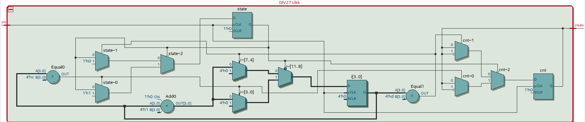
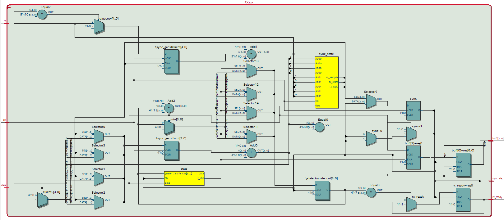
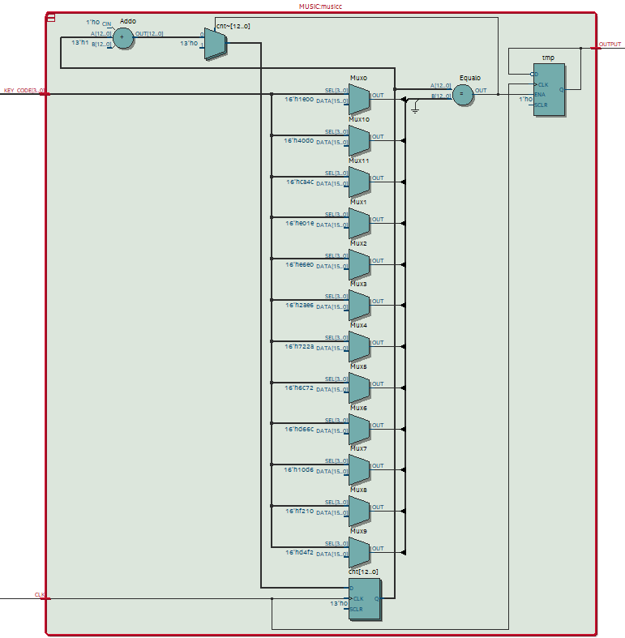
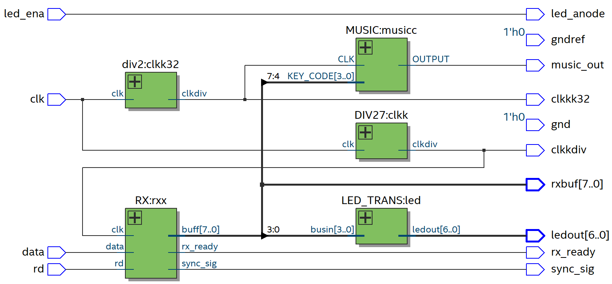
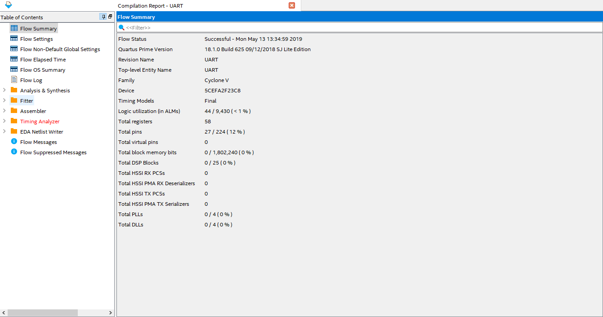
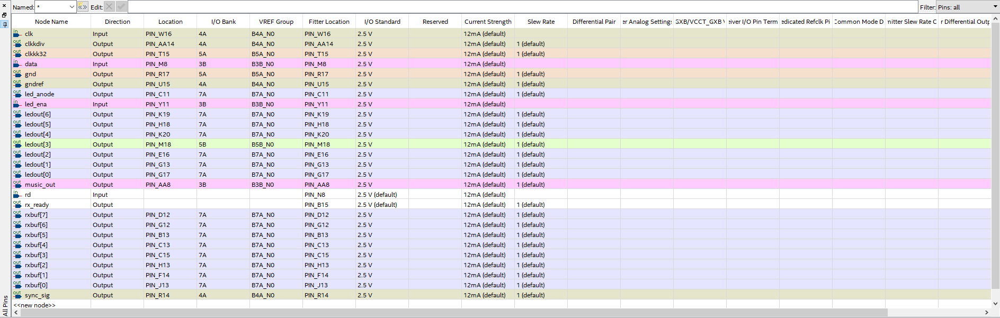
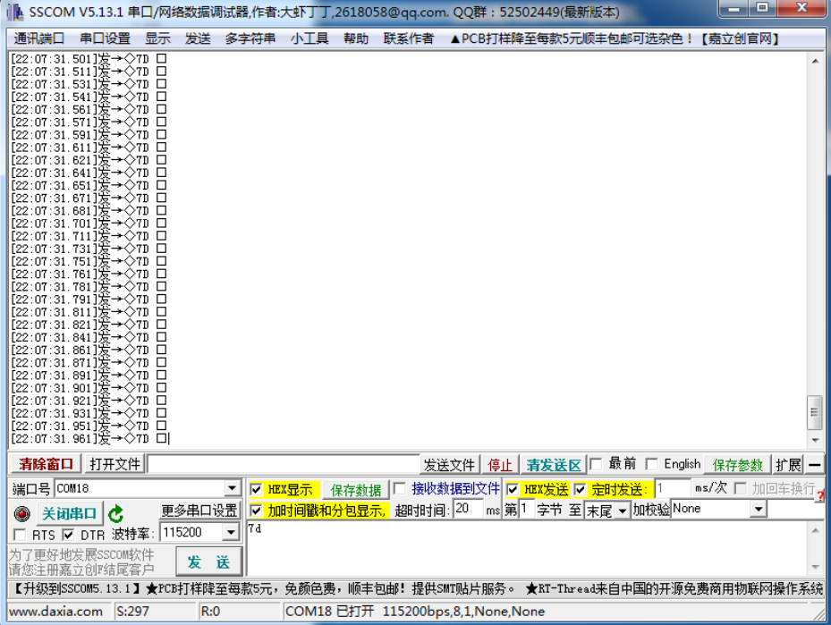

如上图所示同步信号正确输出，表示代码逻辑正确。
如上图所示同步信号正确输出，表示代码逻辑正确。本次实验我实现了基于FPGA的UART串口通信，在此基础上根据接收数据动态控制数码管以及蜂鸣器，并可做到通过串口指令播放任意歌曲的效果。
本次实验最关键的是UART串口通信协议的实现。由于调试以及其他需要在本实验中我仅实现了串口的接收功能，但发送功能因为不需产生同步信号实现起来更简单故在此略过。
UART常用串口协议码流如下: 1位起始位、8位数据位、无奇偶校验、一位停止位，在信号空闲时为高电平。
为了保证起始位的有效性我对每个比特周期再16等分，选定的波特率是115200，由于系统时钟50MHz，时钟分频数为27.13，取整为27。
27分频器的设计：由于使用单计数器上升沿触发的分频器只能产生偶数分频，在设计27分频器时需要设置两个计数器来生成占空比不为0.5的分频信号。
RX的设计：串口接收数据的过程可视为一有限状态机。初始状态为空闲(idle)状态，在起始位到来时进入起始(start)状态，而后进入数据(data)状态，当接收完全部8bit数据后进入终止状态，最后返回空闲(idle)状态。因为终止态不计入数据传输的过程中，在我的实现中为了方便将其省略。
由于系统时钟以及分频有误差、异步收发时钟不同步等问题，不能完全依赖于上述状态机做到串口接收数据的目的，而需要选定最佳采样判决点或在不同时刻对同一比特采样实现时间分集来增加比特传输的成功率。为了实现的简易性我仅实现了最佳采样判决的方法，同时起始位的判决有一定的抗电平抖动性。
RX实现细节：RX内部有两个进程sync_gen与state_transfer。state_transfer原理与上述原理一致，由sync_gen产生的异步同步信号触发；sync_gen用于判断有新的串口数据到来并根据协议在最佳判决时刻输出一个上升沿同步信号，用来触发state_transfer有限状态机。串口数据到来的准则是若在idle状态连续采样8次数据均为0则认为有数据到来，而后每采样8次翻转一下输出同步信号电平。最终，传输的数据在状态转换机内部被移位锁存到输出端以实现接收串口数据的功能。
其他器件：串口协议是比较底层的协议，但一旦该器件设计好原则上可以通过通信实现任意复杂功能。在本次实验中我只实现了将接收buffer接到LED上予以显示、低四位数据接到七段数码管上显示数字以及通过高四位比特控制蜂鸣器的功能。蜂鸣器的频率由输入的串口数据控制，故可以通过合理规划串口发送数据来达到演奏任意音乐的效果，而不需要像内置的实现方式一样设计一个很长的状态转换机，却只能演奏一个或几个歌曲。
library ieee;
use ieee.std_logic_1164.all;
use ieee.std_logic_unsigned.all;
entity DIV27 is
port(
clk: in std_logic;
clkdiv: out std_logic
);
end DIV27;
architecture rtl of DIV27 is
signal cnt: std_logic:='1';
type states is(llow, hhigh);
begin
process(clk)
variable i: std_logic_vector(3 downto 0) := "0000";
variable state: states := llow;
begin
if(clk'event and clk='1') then
if(state = llow) then
if(i = "1100") then
i := "0000";
state := hhigh;
cnt <= not cnt;
else
i := i + '1';
end if;
else
if(i = "1101") then
i := "0000";
state := llow;
cnt <= not cnt;
else
i := i + '1';
end if;
end if;
end if;
end process;
clkdiv <= cnt;
end rtl;
该代码通过低电平计数13次翻转，高电平计数14次翻转来达到27分频的效果，电路见下图： 
library ieee;
use ieee.std_logic_1164.all;
use ieee.std_logic_unsigned.all;
entity RX is
generic(data_bits: integer := 8);--clkwait: integer := 16)
port(
clk: in std_logic;
data: in std_logic;
rd: in std_logic;
buff: buffer std_logic_vector(data_bits-1 downto 0);
rx_ready: out std_logic := '0';
sync_sig: out std_logic
);
end RX;
architecture rtl of RX is
type states is(r_idle, r_start, r_data);
type sync_states is(rx_start, rx_wait, rx_sample);
signal state: states:= r_idle;
signal sync_state: sync_states := rx_start;
signal sync: std_logic := '0';
begin
sync_sig <= sync;
sync_gen: process(clk)
variable clkcnt: std_logic_vector(3 downto 0) := "0000";
variable datacnt: integer range 0 to 16:= 0;
begin
if(clk'event and clk='1') then
case sync_state is
when rx_start =>
if(data = '0') then
clkcnt := clkcnt + '1';
if(clkcnt = "1000") then
sync_state <= rx_wait;
sync <= not sync;
end if;
else
clkcnt := "0000";
sync <= '0';
end if;
when rx_wait =>
clkcnt := clkcnt + '1';
if(clkcnt(2 downto 0) = "000") then
sync_state <= rx_sample;
end if;
when rx_sample =>
clkcnt := clkcnt + '1';
sync <= not sync;
datacnt := datacnt + 1;
if(datacnt = 16) then
sync_state <= rx_start;
datacnt := 0;
else
sync_state <= rx_wait;
end if;
end case;
end if;
end process sync_gen;
state_transfer: process(sync)
variable cnt: integer range 0 to data_bits := 0;
begin
if(sync'event and sync='1') then
case state is
when r_idle =>
if(data = '0') then
state <= r_start;
cnt := 0;
end if;
when r_start =>
state <= r_data;
buff(data_bits-1) <= data;
cnt := cnt + 1;
when r_data =>
buff(data_bits-2 downto 0) <= buff(data_bits-1 downto 1);
buff(data_bits-1) <= data;
if(cnt = 7) then
state <= r_idle;
rx_ready <= '1';
end if;
cnt := cnt + 1;
end case;
end if;
end process state_transfer;
end rtl;
程序原理在设计分析中有说明，代码只是将那个原理实现的过程。该模块有未实现的rd串口读取信号、rx_ready接收完成信号以及用于测试的sync_sig同步信号，可以通过扩展来实现更完善的uart串口器件，电路见下图： 
library ieee;
use ieee.std_logic_1164.all;
use ieee.std_logic_unsigned.all;
entity MUSIC is
PORT (
KEY_CODE : IN std_logic_vector(3 downto 0);
CLK:IN STD_LOGIC;--32
OUTPUT:OUT STD_LOGIC
);
END MUSIC;
ARCHITECTURE MUSIC_BEHAVE OF MUSIC IS
SIGNAL JUG : STD_LOGIC_VECTOR(12 DOWNTO 0);
signal cnt : std_logic_vector(12 downto 0);
signal tmp : std_logic:='0';
BEGIN
PROCESS(CLK)
--variable i:integer:=0;
BEGIN
--if(i=0)then
CASE KEY_CODE IS
WHEN "1001" => JUG<="0101110101001";--DO 2986.43 260.61
WHEN "1010" => JUG<="0101001100100";--RE 2660.93
WHEN "1011" => JUG<="0100101000001";--MI 2370.30
WHEN "1100" => JUG<="0100010111100";--FA 2237.26
WHEN "1101" => JUG<="0011111001000";--SO 1992.98
WHEN "1110" => JUG<="0011011101111";--LA 1775.57
WHEN "1111" => JUG<="0011000101101";--SI 1582.12
WHEN "0001" => JUG<="0010111010100";--DO 1493.07
WHEN "0010" => JUG<="0010100110001";--RE 1330.17
WHEN "0011" => JUG<="0010010100001";--MI 1185.04
WHEN "0100" => JUG<="0010001011110";--FA 1118.53
WHEN "0101" => JUG<="0001111100100";--SO 996.50
WHEN "0110" => JUG<="0001101110111";--LA 887.79
WHEN "0111" => JUG<="0001100010110";--SI 790.92
WHEN OTHERS => JUG<="0000000000000";
END CASE;
END PROCESS;
process(clk)
begin
if(clk'event and clk='1')then
if(cnt=JUG)then
cnt<="0000000000000";
tmp <=not tmp;
else
cnt<=cnt+1;
end if;
end if;
end process;
OUTPUT <=tmp;
END MUSIC_BEHAVE;
该模块原理较简单，输入时钟为32分频的50MHz时钟，根据输入的keycode输出不同频率的方波(DO-SI)接到蜂鸣器上以演奏乐曲，电路原理图如下： 
library ieee;
use ieee.std_logic_1164.all;
entity UART is
port(
clk: in std_logic;
data: in std_logic;
rd: in std_logic;
rx_ready: out std_logic;
sync_sig: out std_logic;
ledout: out std_logic_vector(6 downto 0);
music_out: out std_logic;
--use for powering chip
gnd: out std_logic;
gndref: out std_logic;
--chip end
led_ena: in std_logic;
led_anode: out std_logic;
rxbuf: out std_logic_vector(7 downto 0);
clkkdiv: out std_logic;
clkkk32: out std_logic
);
end UART;
architecture rtl of UART is
component LED_TRANS is
port (
busin: in std_logic_vector(3 downto 0);
ledout: out std_logic_vector(6 downto 0)
);
end component;
component DIV27 is
port(
clk: in std_logic;
clkdiv: out std_logic
);
end component;
component RX is
generic(data_bits: integer := 8);--clkwait: integer := 16)
port(
clk: in std_logic;
data: in std_logic;
rd: in std_logic;
buff: buffer std_logic_vector(data_bits-1 downto 0);
rx_ready: out std_logic := '0';
sync_sig: out std_logic
);
end component;
component div2 is
generic(factor:integer := 100);
port(
clk: in std_logic;
clkdiv: out std_logic
);
end component;
component MUSIC is
PORT (
KEY_CODE : IN std_logic_vector(3 downto 0);
CLK:IN STD_LOGIC;--32
OUTPUT:OUT STD_LOGIC
);
END component;
signal clkdiv: std_logic;
signal clk32: std_logic;
signal buff: std_logic_vector(7 downto 0);
begin
gnd <= '0';
gndref <= '0';
clkk: DIV27 port map(clk, clkdiv);
rxx: RX generic map(8) port map(clkdiv, data, rd, buff, rx_ready, sync_sig);
led: LED_TRANS port map(buff(3 downto 0), ledout);
clkk32: div2 generic map(16) port map(clk, clk32);
musicc: music port map(buff(7 downto 4), clk32, music_out);
clkkdiv <= clkdiv;
clkkk32 <= clk32;
rxbuf <= buff;
led_anode <= led_ena;
end rtl;
该器件也有一些用于调试或未实现的输出，真正有用的端口在第一段注释之前。该模块将上述所有模块均连接在一起来完成预期功能，电路原理图如下： 

本实验仅对RX模块进行了仿真。由于uart串口有些接近底层故调试时也借用示波器来辅助调试。示波器调试结果也提供在下面。
library ieee;
use ieee.std_logic_1164.all;
entity RX_tb is
end RX_tb;
architecture rtl of RX_tb is
component RX is
generic(data_bits: integer := 8);--clkwait: integer := 16)
port(
clk: in std_logic;
data: in std_logic;
rd: in std_logic;
buff: buffer std_logic_vector(data_bits-1 downto 0);
rx_ready: out std_logic := '0';
sync_sig: out std_logic
);
end component;
signal clk, data, rx_ready, rd, sync : std_logic;
signal buff : std_logic_vector(7 downto 0);
begin
rxx: RX generic map(8) port map(clk, data, rd, buff, rx_ready, sync);
process
begin
clk <= '0';
wait for 1 ns;
clk <= '1';
wait for 1 ns;
end process;
process
begin
data <= '1';
wait for 40 ns;
data <= '0'; -- start
wait for 32 ns;
data <= '1';
wait for 32 ns;
data <= '0';
wait for 32 ns;
data <= '1';
wait for 32 ns;
data <= '1';
wait for 32 ns;
data <= '0';
wait for 32 ns;
data <= '1';
wait for 32 ns;
data <= '0';
wait for 32 ns;
data <= '0';
wait for 32 ns;
data <= '1';
wait for 40 ns;
end process;
end rtl;
本仿真模拟真实串口数据发送情况，用以检测同步信号及接收数据是否与期待一致。仿真结果如下：
如上图所示同步信号正确输出，表示代码逻辑正确。
 输出信号频率为1.852MHz，预期结果50MHz/27=1.852MHz，分频成功。
输出信号频率为1.852MHz，预期结果50MHz/27=1.852MHz，分频成功。
 由于RX根据同步信号来采样，正确的同步信号是正确采样的前提。发送波特率为115200，因该速率实际不可通过50MHz分频得到故采用最近邻整数的方式来分频。理论上输出sync信号频率应为50MHz/27/16=115.74kHz，与示波器上观察的一致。虽然与115.2kHz有些许偏差但在短序列时不影响采样判决结果。
由于RX根据同步信号来采样，正确的同步信号是正确采样的前提。发送波特率为115200，因该速率实际不可通过50MHz分频得到故采用最近邻整数的方式来分频。理论上输出sync信号频率应为50MHz/27/16=115.74kHz，与示波器上观察的一致。虽然与115.2kHz有些许偏差但在短序列时不影响采样判决结果。
 987.8Hz为SO音，说明蜂鸣器可正确输出。
987.8Hz为SO音，说明蜂鸣器可正确输出。
 接收数据接到LED0-LED7上，低4位接到数码管上，高四位接到蜂鸣器上，enaout与enain即DIP0直接相连用于提供7段数码管的阳极，sync_sig与clkdiv用于测试输出波形。

 发送数据为7d，LED输出也为7d，其中d接到数码管上予以显示。
由于uart偏硬件故很多测试需要借助示波器辅助完成，且即使仿真完全正确板上验证也不一定正确。
代码方面知道了如果有一个信号作为process的触发源但该process未调用该信号时它实际上并不会接到电路中，而此时的仿真结果却完全正确。这样的错误很难发现，需要一定的经验积累。